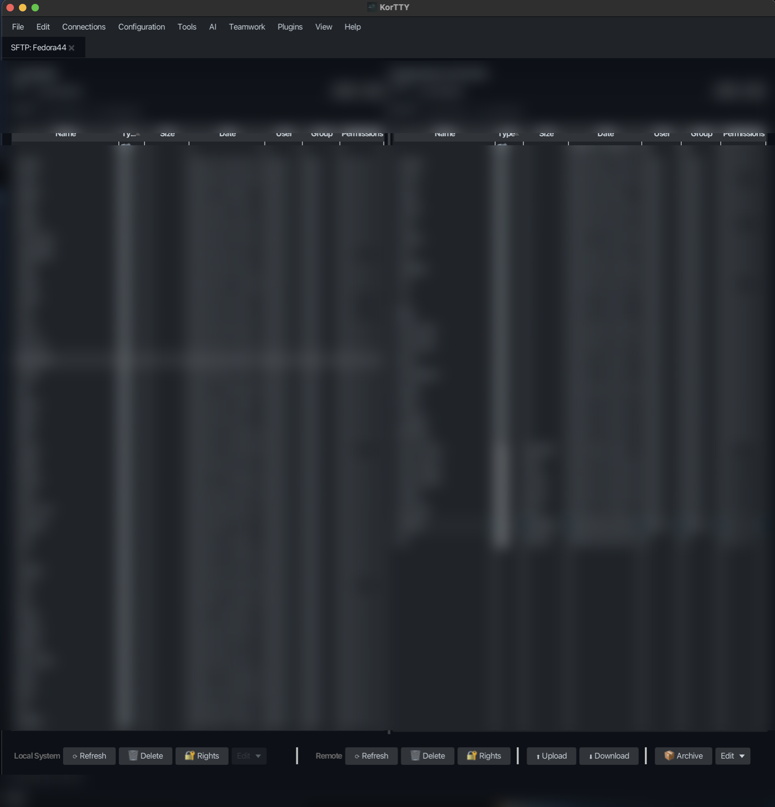

Manager für SFTP-Dateien¶
Der integrierte SFTP-Manager bietet einen grafischen Dateimanager zum Übertragen von Dateien zwischen Ihrem lokalen Computer und Remote-Servern über SFTP. Es verfügt über ein Dual-Panel-Layout, vollständige Unterstützung für Dateivorgänge und eine nahtlose Integration mit dem Snippet-Editor für die Fernbearbeitung von Dateien.
SFTP-Manager öffnen¶
Sie können den SFTP-Manager auf zwei Arten öffnen:
- Menü: Verbindungen → SFTP-Client... (Ctrl+Shift+U, unter macOS Cmd+Shift+U). Mit einem verbundenen Terminal-Tab vor sich öffnet es für den Server dieses Tabs; andernfalls wählen Sie zuerst eine Verbindung.
- Dashboard: Rechtsklick auf eine verbundene Sitzung > SFTP-Client...
Wenn die Verbindung einen temporären SSH-Schlüssel verwendet, der abgelaufen ist, werden Sie aufgefordert, einen neuen Schlüssel einzugeben, bevor die Verbindung fortgesetzt werden kann.
Schnittstelle¶
Der SFTP-Manager verwendet ein Zwei-Panel-Layout für eine einfache Dateiverwaltung nebeneinander:
| Linker Bereich (lokale) | Rechter Bereich (fern) |
|---|---|
| Lokale Dateien durchstöbern | Ferndateien durchstöbern |
| Auf Remote-System hochladen | Auf lokales System herunterladen |
Sortierbare Spalten¶
Beide Paneele zeigen die gleichen Spalten an, von denen alle durch Klicken auf den Spaltenkopf sortierbar sind:
| Spalte | Beschreibung |
|---|---|
| Name | Datei oder Verzeichnisaname |
| Typ | Verzeichnis (📁) oder Datei (📄) Hinweis |
| Größe | Dateigröße im menschenlesbaren Format (Verzeichnisse zeigen —); die Sortierung verwendet die exakte Byteanzahl, mit Ordnern zuerst |
| Datum | Letzte Änderungsdatum und -zeit |
| Benutzer | Eigentümername (lokale Umgebung: aus der Dateisystem; remote: aus SFTP oder UID) |
| Gruppe | Gruppenname (lokal: vom Dateisystem; remote: von SFTP oder GID) |
| Berechtigungen | Berechtigungen im Unix-Stil (z. B. rwxr-xr-x) |
Standardsortierreihenfolge¶
Standardmäßig werden Dateien in der folgenden Reihenfolge nach der Spalte Typ sortiert:
- Übergeordnetes Verzeichnis (
..) – immer oben - Verzeichnisse, die mit „.“ beginnen (z. B.
.git,.config) – alphabetisch - Andere Verzeichnisse – alphabetisch
- Dateien, die mit „.“ beginnen (z. B.
.bashrc) – alphabetisch - Alle anderen Dateien – alphabetisch
Klicken Sie auf eine beliebige Spaltenüberschrift, um nach dieser Spalte zu sortieren. Durch erneutes Klicken der Typ-Spalte wird zwischen aufsteigender und absteigender Reihenfolge umgeschaltet. Das übergeordnete Verzeichnis (..) bleibt immer oben, unabhängig von Spalte und Richtung der Sortierung.
Durchsuchen des Servers¶
Remote-Ordner werden im Hintergrund gelesen, sodass das Fenster auch bei Ordnern mit Zehntausenden von Einträgen reaktionsfähig bleibt. Während ein Ordner geladen wird, überdeckt ein Wird geladen…-Indikator die Remote-Liste. Das Pfadfeld und die Liste wechseln erst in den neuen Ordner, wenn er gelesen wurde; falls das Lesen fehlschlägt (Ordner existiert nicht oder Sie haben keine Rechte), wird ein Fehler angezeigt und der Ordner, in dem Sie sich befanden, bleibt bestehen.
Geben Sie einen Pfad in das Remote-Pfad-Feld ein und drücken Enter, um dorthin zu gelangen. ~ und ~/… stehen für Ihr Login-Verzeichnis auf dem Server, und ein Pfad ohne führendes / wird relativ zum angezeigten Ordner interpretiert; .. und . werden aufgelöst, sodass ../logs den Geschwisterordner logs öffnet.
Verbindung verloren¶
Wenn der Server oder das Netzwerk die Sitzung beendet, zeigt die Statusleiste Getrennt von host mit einer Schaltfläche Neu verbinden, und die Remote-Aktionen sind deaktiviert. Wenn die Verbindung ohne Mitteilung des Servers abbricht, führt die erste Remote-Aktion, die Sie versuchen (Refresh, Upload, Download usw.), wieder denselben Zustand aus, anstatt nichts zu tun.
Neu verbinden öffnet eine neue Sitzung mit denselben Anmeldeinformationen und listet den Ordner auf, in dem Sie sich befanden. Der Hostschlüssel des Servers wird wie bei der ersten Verbindung geprüft: ein unveränderter Schlüssel verbindet ohne Aufforderung, ein geänderter Schlüssel bleibt blockiert.
Dateioperationen¶
Der SFTP-Manager unterstützt eine umfassende Palette an Dateioperationen:
| Betrieb | Wie |
|---|---|
| Hochladen | Lokale Datei(en) auswählen, auf Hochladen klicken (oder per Drag-and-Drop) |
| Herunterladen | Wählen Sie die Remote-Datei(en) aus und klicken Sie auf „Herunterladen“. |
| Löschen | Datei(en) auswählen, auf Löschen klicken |
| Umbenennen | Wählen Sie eine Datei aus und klicken Sie auf „Umbenennen“ |
| Kopieren | Dateien innerhalb desselben Panels kopieren (eine lokale Kopie läuft im Hintergrund). Ein remote Ordner, der in einen Ordner mit demselben Namen kopiert wird, wird dort zusammengeführt; das Kopieren eines Elements auf sich selbst oder in einen seiner eigenen Unterordner wird mit einem Fehler verweigert |
| Im Snippet-Editor bearbeiten | Wählen Sie genau eine lokale oder Remote-Datei aus und verwenden Sie dann das Symbolleistenmenü Bearbeiten oder das Kontextmenü mit der rechten Maustaste |
| Verzeichnis erstellen | Klicken Sie in einem der beiden Fenster auf „Neuer Ordner“ |
| ZIP erstellen | Wählen Sie mehrere Dateien/Verzeichnisse aus und klicken Sie auf „ZIP erstellen“ |
| Eigentümer/Berechtigungen festlegen | Datei(en) auswählen, Kontextmenü oder Schaltfläche verwenden. Separate Felder für Benutzer-, Gruppen- und Oktalberechtigungen (z. B. 755) |
Dateien und Ordner hochladen¶
Hochladen kopiert die ausgewählten lokalen Dateien und Ordner in den entfernten Ordner, der angezeigt wurde, als Sie Hochladen geklickt haben; das Durchsuchen anderer Orte während es läuft ändert das Ziel nicht. Hochladen bleibt deaktiviert, bis der erste entfernte Ordner aufgelistet wurde, weil der Server ~ selbst nicht erweitert.
- Das erneute Hochladen eines Ordners führt zu einer Zusammenführung in den bestehenden entfernten Ordner: Dateien mit demselben Namen werden ersetzt, andere entfernte Dateien bleiben erhalten.
- Dateien werden gestreamt, sodass ihre Größe nicht durch den Speicher begrenzt ist; Dateien größer als 2 GB werden wie jede andere hochgeladen.
- Wenn die Verbindung während eines Uploads oder Downloads abbricht, stoppt der Rest des Batches mit einem Getrennt-Status statt eines Fehlers pro Datei.
Berechtigungen¶
Das Berechtigungsfeld von Besitzer/Berechtigungen setzen und des Remote-Archivdialogs akzeptiert genau drei Oktalziffern, wie 755 oder 644; lassen Sie es leer (oder unverändert), um den aktuellen Modus beizubehalten. Alles andere lässt das Dialogfeld mit einem Fehler offen, sodass kein anderer Text jemals chmod erreicht.
Bearbeiten von Dateien mit dem Snippet-Editor¶
Die Aktion Im Snippet-Editor bearbeiten ist nur für eine einzelne ausgewählte Datei aktiviert. Es ist deaktiviert für:
- Ordner
- Der Eintrag im übergeordneten Verzeichnis (
..) - Mehrfachauswahl
Lokale Dateien werden direkt aus dem lokalen Dateisystem gelesen; Remote-Dateien werden über die aktive SFTP-Sitzung in den Editor heruntergeladen.
Wenn die Datei im Snippet-Editor geöffnet wird, bleibt die vollständige Symbolleiste verfügbar, einschließlich:
- Formatierung und Syntaxprüfung
- Editor-Profile und Styling
- Zeilennummern und Zeilenumbruch
- Konfigurierte KI-Aktionen
Die Dateimodus-Schaltflächen bieten folgende Speicheroptionen:
- Datei überschreiben – schreibt den aktuellen Editorinhalt zurück in die ursprüngliche lokale oder Remote-Datei
- Speichern unter... – schreibt eine neue lokale Datei über eine Dateiauswahl oder fordert für Remote-Dateien zur Eingabe eines neuen Dateinamens im selben Remote-Verzeichnis auf
- Als Snippet speichern – speichert den aktuellen Inhalt als neues Snippet-Manager-Snippet, ohne die Quelldatei als gespeichert zu markieren

Suche¶
Beide Panels unterstützen die Glob-Mustersuche mit dem Platzhalter *. Zum Beispiel:
*.logfindet alle Protokolldateien im aktuellen Verzeichnis*.{py,sh}findet Python- und Shell-Dateien (wenn Ihre Shell die Klammererweiterung unterstützt)backup*findet alle Dateien, die mit „backup“ beginnen"
Geben Sie das Muster in das Suchfeld ein, um angezeigte Dateien schnell zu filtern, ohne das aktuelle Verzeichnis zu verlassen.